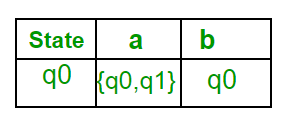
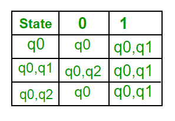

An NFA can have zero, one or more than one move from a given state on a given input symbol. An NFA can also have NULL moves (moves without input symbol). On the other hand, DFA has one and only one move from a given state on a given input symbol.
Conversion from NFA to DFA
Suppose there is an NFA N < Q, ∑, q0, δ, F > which recognizes a language L. Then the DFA D < Q’, ∑, q0, δ’, F’ > can be constructed for language L as:
Step 1: Initially Q’ = ɸ.
Step 2: Add q0 to Q’.
Step 3: For each state in Q’, find the possible set of states for each input symbol using transition function of NFA. If this set of states is not in Q’, add it to Q’.
Step 4: Final state of DFA will be all states with contain F (final states of NFA)
Example
Consider the following NFA shown in Figure 1.

Following are the various parameters for NFA.
Q = { q0, q1, q2 }
∑ = ( a, b )
F = { q2 }
δ (Transition Function of NFA)

Step 1: Q’ = ɸ
Step 2: Q’ = {q0}
Step 3: For each state in Q’, find the states for each input symbol.
Currently, state in Q’ is q0, find moves from q0 on input symbol a and b using transition function of NFA and update the transition table of DFA.
δ’ (Transition Function of DFA)

Now { q0, q1 } will be considered as a single state. As its entry is not in Q’, add it to Q’.
So Q’ = { q0, { q0, q1 } }
Now, moves from state { q0, q1 } on different input symbols are not present in transition table of DFA, we will calculate it like:
δ’ ( { q0, q1 }, a ) = δ ( q0, a ) ∪ δ ( q1, a ) = { q0, q1 }
δ’ ( { q0, q1 }, b ) = δ ( q0, b ) ∪ δ ( q1, b ) = { q0, q2 }
Now we will update the transition table of DFA.
δ’ (Transition Function of DFA)

Now { q0, q2 } will be considered as a single state. As its entry is not in Q’, add it to Q’.
So Q’ = { q0, { q0, q1 }, { q0, q2 } }
Now, moves from state {q0, q2} on different input symbols are not present in transition table of DFA, we will calculate it like:
δ’ ( { q0, q2 }, a ) = δ ( q0, a ) ∪ δ ( q2, a ) = { q0, q1 }
δ’ ( { q0, q2 }, b ) = δ ( q0, b ) ∪ δ ( q2, b ) = { q0 }
Now we will update the transition table of DFA.
δ’ (Transition Function of DFA)

As there is no new state generated, we are done with the conversion. Final state of DFA will be state which has q2 as its component i.e., { q0, q2 }
Following are the various parameters for DFA.
Q’ = { q0, { q0, q1 }, { q0, q2 } }
∑ = ( a, b )
F = { { q0, q2 } } and transition function δ’ as shown above. The final DFA for above NFA has been shown in Figure 2.

Note : Sometimes, it is not easy to convert regular expression to DFA. First you can convert regular expression to NFA and then NFA to DFA.
Question : The number of states in the minimal deterministic finite automaton corresponding to the regular expression (0 + 1)* (10) is ____________.
Solution : First, we will make an NFA for the above expression. To make an NFA for (0 + 1)*, NFA will be in same state q0 on input symbol 0 or 1. Then for concatenation, we will add two moves (q0 to q1 for 1 and q1 to q2 for 0) as shown in Figure 3.

